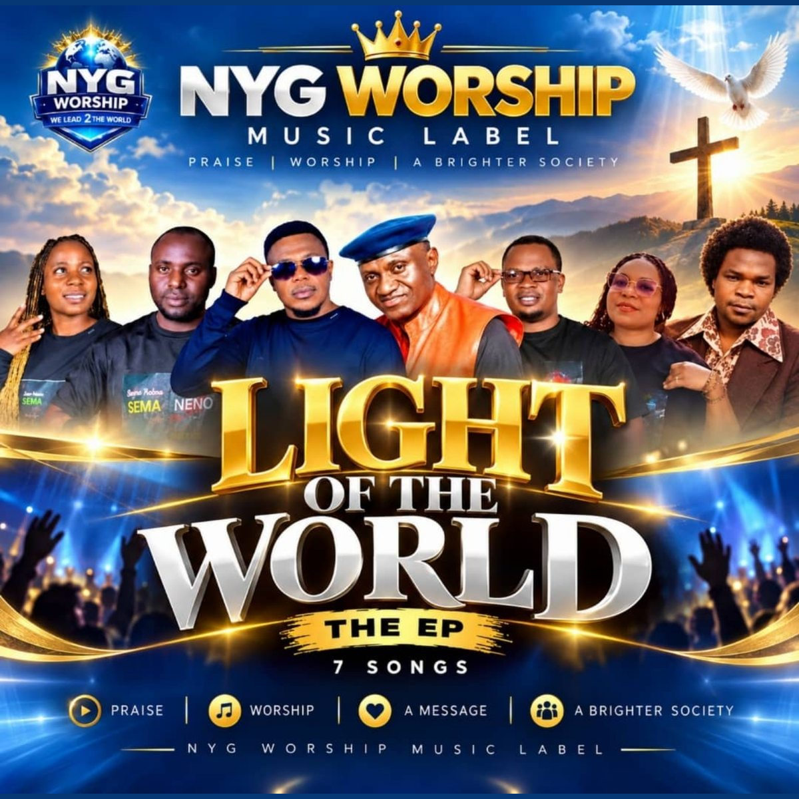

WASIFU / BIOGRAPH
Fahamu historia, safari ya muziki na huduma za waimbaji wetu wa Injili.
NYG WORSHIP Kikundi cha waimbaji wa Injili kutoka Songea, Tanzania. Gusa kufungua Biography
ARTIST BIOGRAPHY
NYG WORSHIP
UTAMBULISHO NA HISTORIA
NYG WORSHIP ni kikundi cha waimbaji wa Injili kutoka Ruvuma, Songea, Tanzania. Kilianza huduma ya uimbaji mwaka 2025.
MSUKUMO WA HUDUMA
Msukumo wa ndani katika kumtumikia Mungu kwa njia ya uimbaji mbali na kufundisha neno na kulihubiri.
Msukumo wa kimuziki: Hillsong Worship.
CHANGAMOTO ZA MWANZO
Changamoto kubwa ilikuwa ni kwenye ku-shoot video ya wimbo wa SEMA NENO, ulikuwa na gharama kubwa na namna ya kuufanyia promotion kulikuwa na njia nyingi ngeni kwetu.
WIMBO WA KWANZA
TEMBEA NA YESU — mwaka 2025.
NYIMBO NA EP
Tuna nyimbo 6 ambazo ni EP yetu ya kwanza inayoitwa LIGHT OF THE WORLD.
WIMBO TUNAOUFURAHIA ZAIDI
Zote ni nzuri na zina ujumbe, ila kwa tofauti na kwa nyakati tofauti. Zinafaa watu wote wenye hali zote.
MAFANIKIO
Jina NYG limekua na kuenea karibia kila mahali na tumefanikiwa kupeleka ujumbe wetu juu ya Kristo kwa TV, radio, social platform zote na kuwafikia watu wengi wakapokea neno la Kristo kupitia nyimbo zetu.
Tumefanikiwa kuwa na tovuti inayotangaza kazi zetu na kazi zingine za waimbaji kama sisi.
USHIRIKIANO WA KIMUZIKI
Tumeshirikiana na OBBY ALPHA katika wimbo wa SEMA NENO.
SHUGHULI NYINGINE
Sisi ni wajasiriamali, tunalima, tunafuga, tunafanya sanaa mbalimbali za ufundi n.k.
UJUMBE KWA JAMII
Neno la Kristo lina nguvu saba unapolipeleka kwa watu kwa njia ya uimbaji sababu kila mtu atavutiwa kusikiliza kuliko kuwasubiri watu waje makanisani.

LIGHT OF THE WORLD EP
MALENGO YA HUDUMA
Tunataka kuwafikia watu wengi zaidi na kwenda duniani kote na kuitangaza injili ya Bwana bila mipaka ya kidini, kikabila na kidhehebu.
Tunataka kuwa chanzo cha mafanikio makubwa kwa waimbaji ambao wapo ndani ya NYG WORSHIP na walio nje yetu.
USHAURI KWA WAIMBAJI WACHANGA
Wasikate tamaa kutokana na changamoto zilizopo! Wasonge mbele wakitumia kidogo walichonacho kukua na kuongezeka! Inawezekana kwake aaminiye!
KAZI TUNAYOTANGAZA
Nataka kuitangaza EP yetu mpya na kuifikisha kote duniani kupitia tovuti hii.
MITANDAO RASMI
YouTube: NYG WORSHIP LABEL
Facebook: NYG WORSHIP Facebook
 AZZO DREY
Msanii wa muziki wa Injili.
Gusa kufungua Biography
AZZO DREY
Msanii wa muziki wa Injili.
Gusa kufungua Biography
ARTIST BIOGRAPHY
AZZO DREY
HISTORIA YA MSANII
Andrea Arthur, anayefahamika kisanii kama AZZO DREY, ni msanii binafsi wa muziki wa Injili kutoka Songea, Ruvuma, Tanzania. Alianza huduma yake ya uimbaji mwaka 2019.
MSUKUMO WA HUDUMA
Upendo wake kwa Mungu ulimhamasisha kuhubiri Neno kupitia nyimbo za Injili. Apostle Eliud Bilali ni mfano wake wa kuigwa katika kumtumikia Mungu.
SAFARI YA MUZIKI
Wimbo wake wa kwanza ni HALLELUYA, uliotoka mwaka 2025. Hadi sasa ametoa nyimbo 10 na hana album wala EP.
CHANGAMOTO NA MAFANIKIO
Changamoto kubwa imekuwa kupata sapoti ya kutosha. Amefanikiwa kujulikana ndani na nje ya mkoa wake.
USHIRIKIANO
Ameshirikiana na NYG WORSHIP LABEL. Pia anajishughulisha na Music Production.
WIMBO ANAOUUPENDA
MAOMBI ni wimbo unaoelezea jinsi Mungu anavyotenda sawasawa na mapenzi yake.
MAONO YA BAADAYE
Anatamani kuwahamasisha vijana kumuabudu Mungu katika roho na kweli, na kufikisha huduma yake Tanzania nzima na duniani kote.

USHAURI KWA WAIMBAJI
Wakaze kumpenda Mungu, naye atawainua.
MITANDAO YA KIJAMII
APOSTLE ELIUD BILALI Mwimbaji wa Injili, Mchungaji na Balozi wa Amani Duniani. Gusa kufungua Biography
ARTIST BIOGRAPHY
APOSTLE ELIUD BILALI
HISTORIA YA MSANII
Apostle Eliud Davies Bilal, anayefahamika kisanii kama Apostle Eliud Bilali, ni msanii binafsi wa muziki wa Injili. Kwa asili anatokea Lushoto, Tanga, Tanzania, na kwa sasa anaishi Songea, mkoani Ruvuma. Alianza rasmi huduma ya uimbaji mwaka 2010.
MSUKUMO WA HUDUMA
Upendo wa uimbaji ulitoka ndani ya moyo wake, bila kushinikizwa na mtu. Katika safari yake amepata msukumo kutoka kwa watumishi mbalimbali wa Mungu, akiwemo Pastor Gwakisa Mwaipopo.
SAFARI YA MUZIKI
Mwaka 2010 alitoa nyimbo zake za mwanzo, YESU NI MALI YANGU na EVERYTHING, ambazo zilisikika mbali. Hadi sasa ana album tatu na single zaidi ya kumi zinazotolewa pia katika mfumo wa EP za mfululizo.
CHANGAMOTO
Changamoto kubwa aliyoipitia mwanzoni mwa huduma yake ilikuwa kukosa maarifa ya kutosha katika kipindi hicho.
WIMBO ANAOUUPENDA
I'M STILL GOING ON (BADO NINAENDELEA) ni wimbo anaoupenda kwa sababu una ujumbe wa kumtia moyo kuendelea kusonga mbele.
MAFANIKIO
Kupitia uimbaji amefanikiwa kufikisha ujumbe wa Neno la Mungu kwa watu wengi, kufahamiana na watu mbalimbali na kupata furaha katika huduma yake.
USHIRIKIANO
Ameshirikiana na NYG WORSHIP pamoja na waimbaji wengine, wakiwemo Irene Mhando na Obby Alpha katika kazi za muziki wa Injili.
HUDUMA NYINGINE
Mbali na uimbaji, ni Balozi wa Amani Duniani, Mchungaji na kiongozi wa NYG, pamoja na kuwa mtaalamu wa afya ya kinywa na meno.
UJUMBE KWA JAMII
"Mpendeni Yesu, inalipa."
MAONO YA BAADAYE
Katika malengo yake ya miaka mitano ijayo, ametaja ndoto ya kuwa na ghorofa tano😅. Anaendelea na safari ya huduma na maendeleo yake binafsi.

WIMBO WA KUTANGAZA
UNAWEZA - AI VERSION ni wimbo uliowasilishwa kwa ajili ya kutangazwa kupitia NYG CENTER - ARTIST OF THE WEEK.
Tazama NYG WORSHIP kwenye YouTube
USHAURI KWA WAIMBAJI
"Wakaze na waombe Mungu, hakuna vya rahisi! Kujituma na kuthubutu ndo njia."
MITANDAO YA KIJAMII
Facebook - Apostle Eliud Bilali
Audiomack - Apostle Eliud Bilali
HITIMISHO
Safari ya Apostle Eliud Bilali katika muziki wa Injili ni sehemu ya huduma yake ya kumtumikia Mungu na jamii. Kupitia nyimbo, uongozi wa kiroho na shughuli za kijamii, anaendelea kufikisha ujumbe wa imani, tumaini na upendo.
"Mpendeni Yesu, inalipa."